日吉高原や中山道方面の東濃と､八百津･川辺のお店です｡
山の中にある､庭にブランコのある手作りシフォンのカフェ
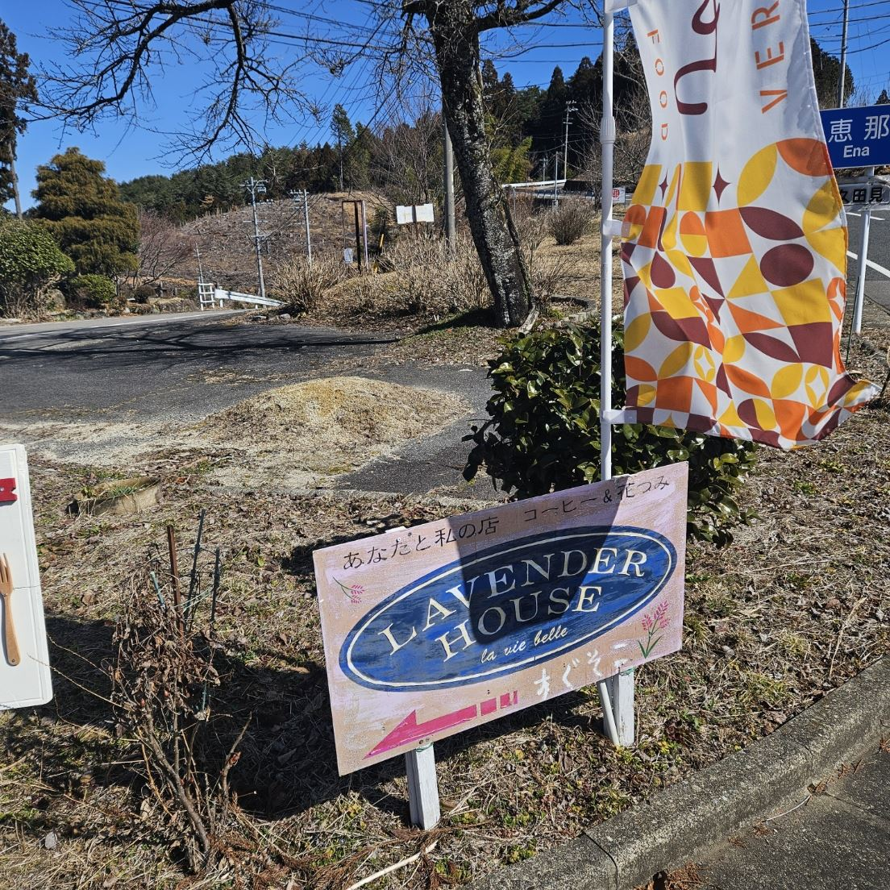
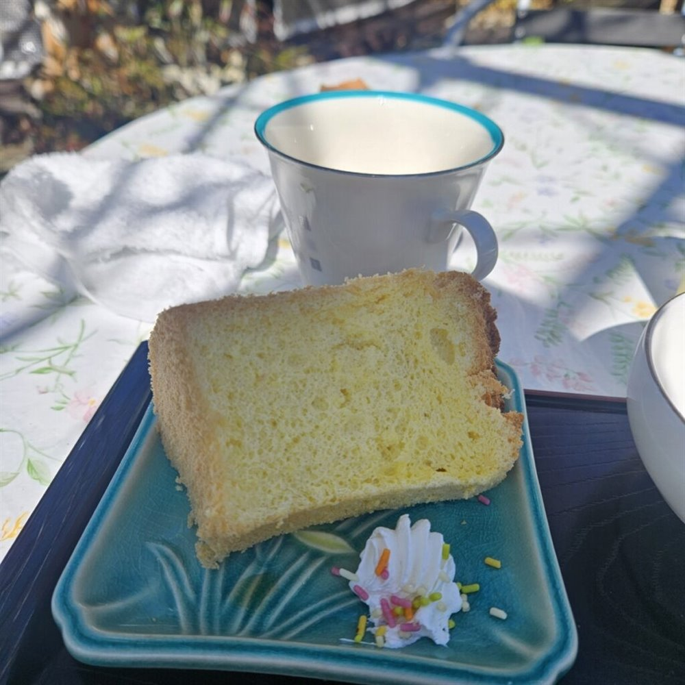
八百津の山の中にあるカフェです｡自販機が使えずに困っていたところで見つけて立ち寄りました｡広い庭にはブランコや遊具があります｡
小鳥のさえずりを聞きながら､コーヒーと手作りのシフォンケーキをいただきました｡近くの見行山の登山口へ登る前のひと休みにもおすすめです｡
川辺町の人気店､川辺卵の鉄板オムライス
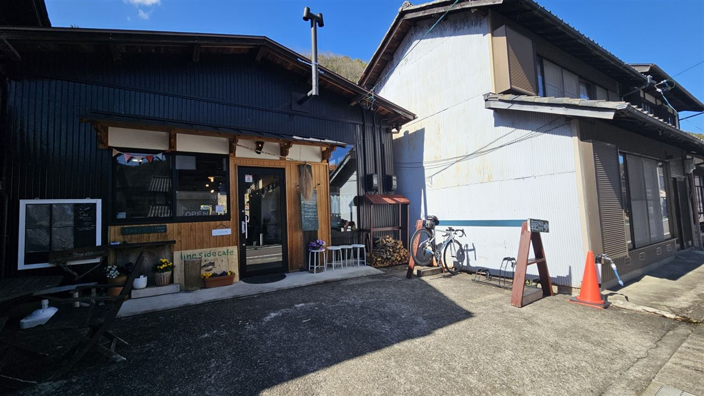
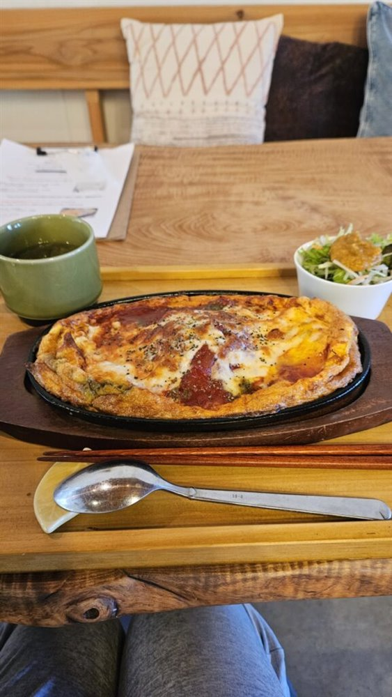
川辺町にある人気のカフェで､バイクラックも用意されています｡1時過ぎに着いてもお客さんでいっぱいでした｡
注文したのは､川辺卵を使った鉄板オムライス｡ほくほくになって帰ってきました｡晴れた日のライドの締めにぴったりです｡
川辺町のパークサイドテラスで､景色を見ながらモーニング
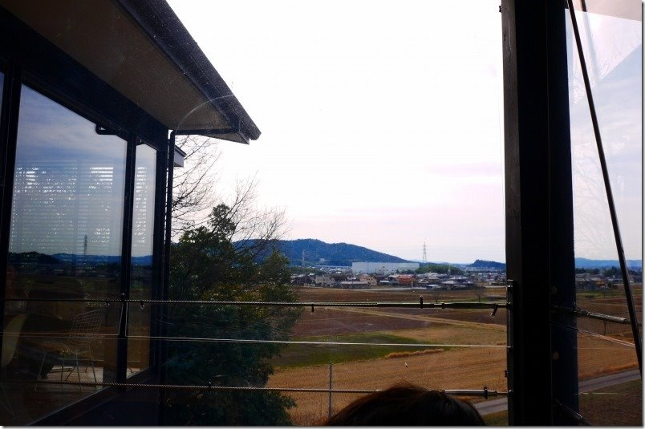
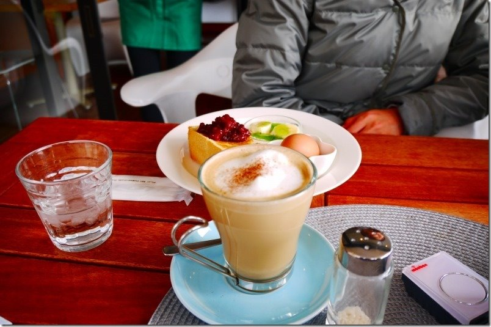
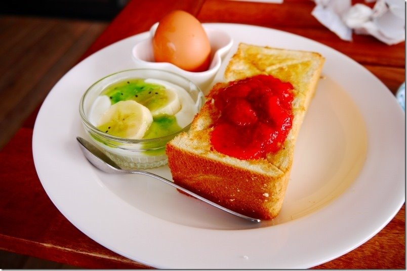
川辺町の高台にある､景色のいいおしゃれなカフェです｡テラス席は透明なガラス板が風をさえぎってくれるので､肌寒い季節でも気持ちよく過ごせます｡
モーニングのトーストについてくる､果肉ゴロゴロのジャムが絶品でした｡山之上の果樹園を抜けて向かうのがおすすめのルートです｡
日吉高原の結節点にある､通称ざわしょー
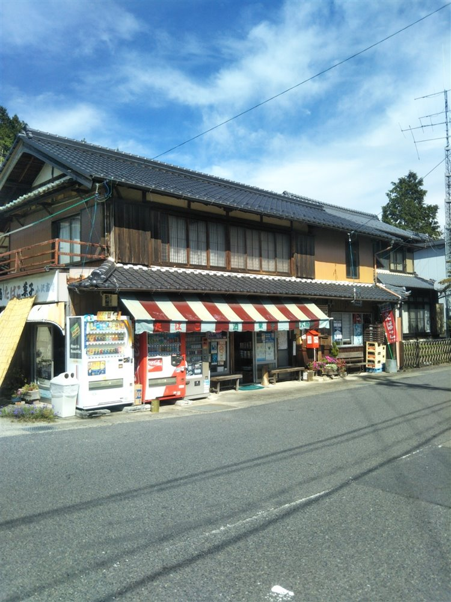
日吉高原のちょうど真ん中にあるお店で､東濃や中山道方面のライドで立ち寄る､サイクリストの休憩スポットです｡通称｢ざわしょー｣｡ジュースを買って一休みするのが定番です｡
店の前はいつも賑やかで､みんなの笑い声が高原に響きます｡営業していない日もあるので､立ち寄るときは余裕をもってどうぞ｡
元祖･竈門炭治郎カラーのお店｡アイス･パン･お菓子が豊富
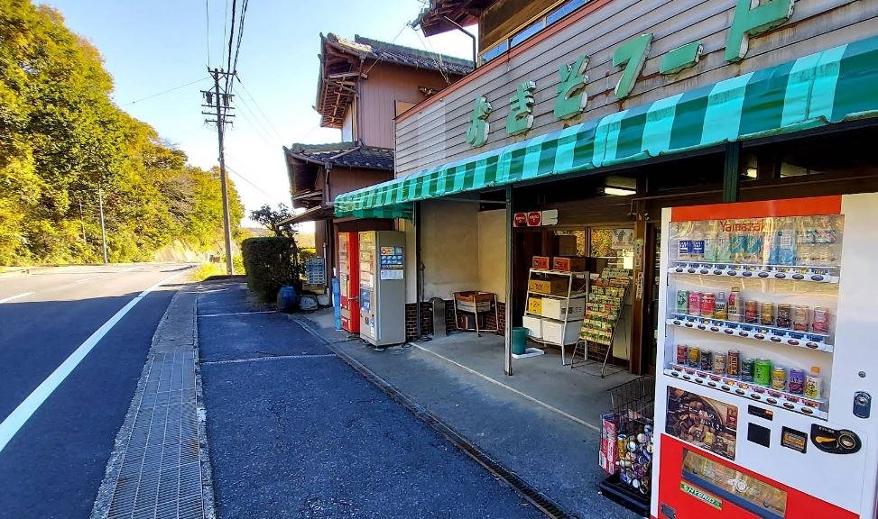
瑞浪にある､元祖･竈門炭治郎カラーのお店です｡こちらのほうが元祖です｡
アイス､パン､お菓子など､品ぞろえが豊富です｡お店の前にはビール瓶の桶があるので､反対側にして椅子にしましょう(公式)｡
東濃ライドの途中にある､焼きたてパンのお店
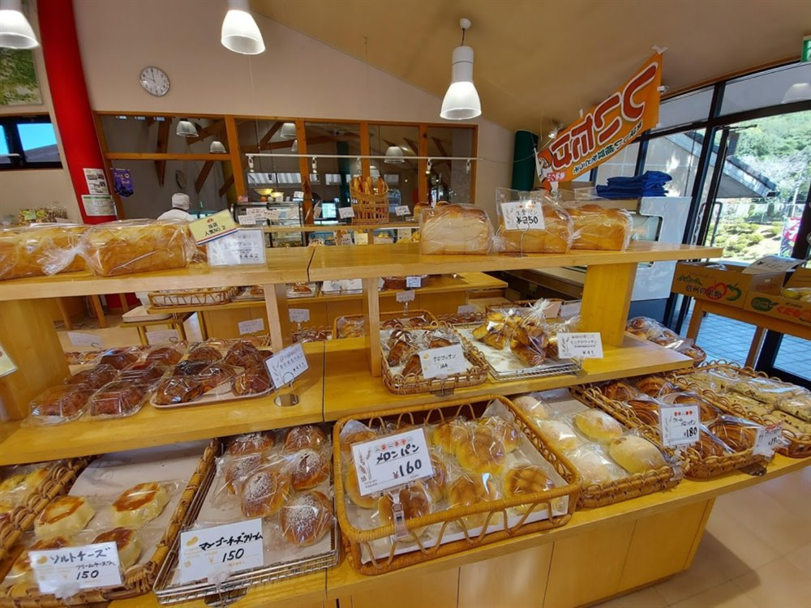
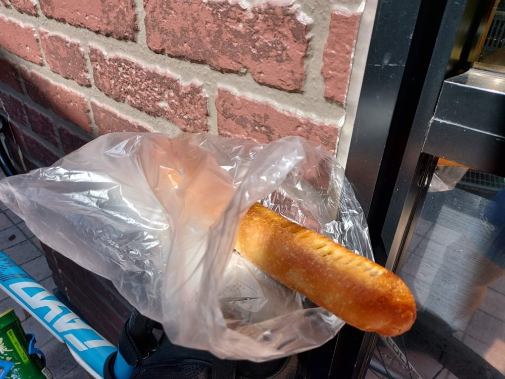
東濃の久須見交差点の近くにあるパン屋さんで､東濃デスライドの途中で立ち寄るお店です｡広い店内にパンがずらりと並びます｡
おすすめはスティック状のパン｡背中のポケットに差しやすく､走りながら食べられる､サイクリストにうれしいパンです｡
潮南の頂上にある､けんちん汁の直売所
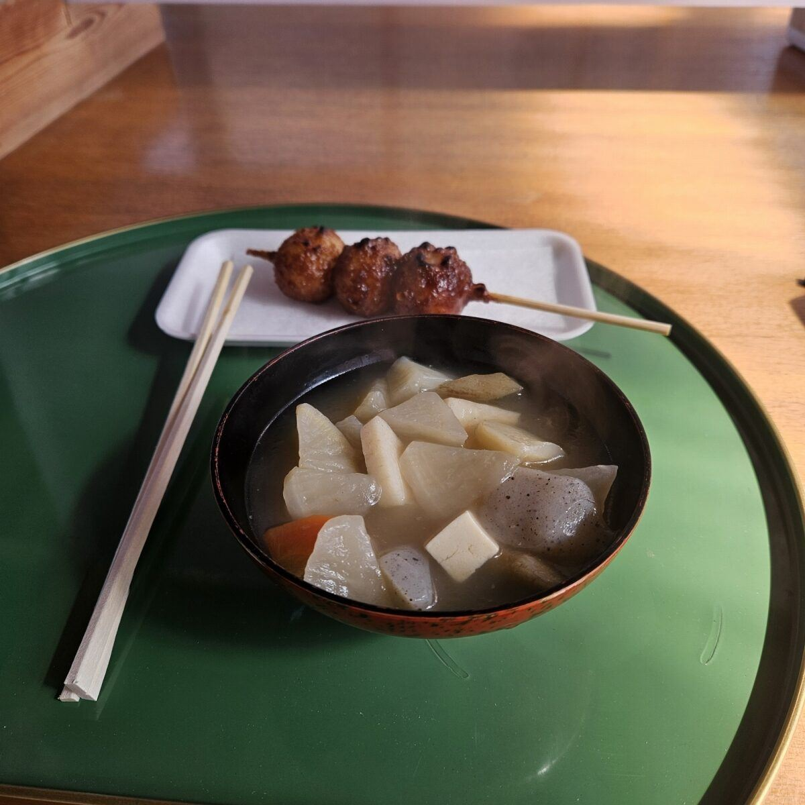
八百津の潮南へ登る峠の頂上､標高500mほどのところにある直売所です｡ここがあるおかげで､標高差400mを一気に登っても安心です｡
名物のけんちん汁は､だしがしっかり出ていて､ほくほくでした｡温かい汁ものが体にしみる､登りの途中のごほうびです｡
※紹介は､トマト工業ブログ(2016年〜2026年)の記事をもとにしています｡営業時間や定休日は変わることがあるので､お出かけの前にご確認ください｡